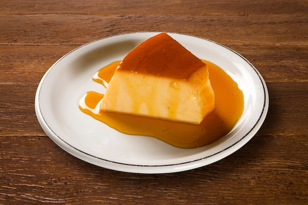

Brazilian Flan

Description
Brazilian Flan recipe with , also known as pudim de leite condensado in Portuguese, is creamy, sweet and utterly delicious. A stunning and fun jiggly dessert with a decadent caramel sauce, great for special occasions like holidays, or just because. This make-ahead dessert may look fancy but is actually quite easy to make! Check it out!
Ingredients
- Eggs
- Whole milk—lower or no fat milk will not work as well
- 2x 14oz cans of sweet condensed milk
Steps
- Make the Custard:
- Preheat your oven to 350F.
- Add all custard ingredients (eggs, milk and condensed milk) to a blender and pulse a few times to combine. Set aside.
- Make the Caramelized Sugar Sauce:
- In a kettle, or medium pan, bring approximately 2.5-3 quarts of water to a boil for the hot water bath.
- Add the sugar and the water to a small saucepan over medium to high heat. Bring it to a simmer, and let it simmer until it turns an amber color, approximately 13 mins. Be sure to watch the pan at all times to avoid burning the sugar, and never, ever, ever stir it
- When the sugar is amber color, carefully pour it in the bundt pan. Coat the inside of the pan with the caramel by swirling it gently up the sides and center of the pan. The sugar will be super hot, so be extra careful!
- Place the bundt pan in a large roasting pan. Then, pour the custard on top of the caramel.
- Pour boiling water into the roasting pan until the water is about approximately halfway up the sides of the bundt pan and bake for 1 hour to 1 hour 15 mins, then remove the cooked flan from the oven. Please note that the flan will still jiggle a little at the center. It will firm up as it cools.
- Let the cooked flan sit in the water bath outside of the oven for another hour or so, until the pan is cool to touch.
- After that hour, loosen the flan from the sides of the pan by running a paring knife around the inside and the outside rims. Then place plastic wrap over the flan and refrigerate in the pan for at least 4 hours – preferably overnight.
- Unmold* and transfer to a plate, then serve and enjoy!